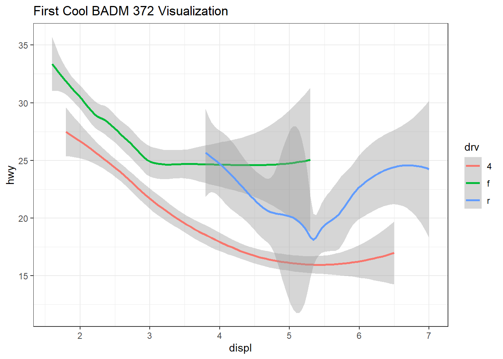
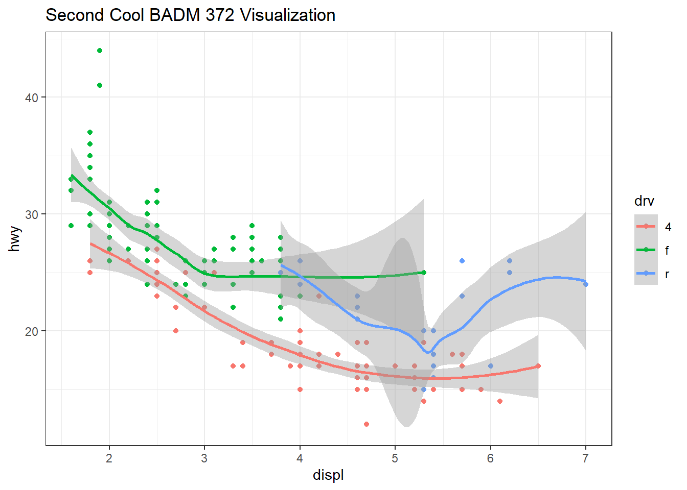
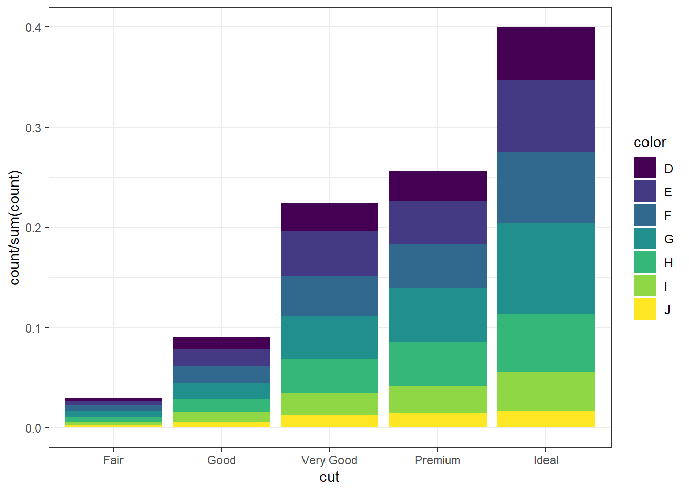
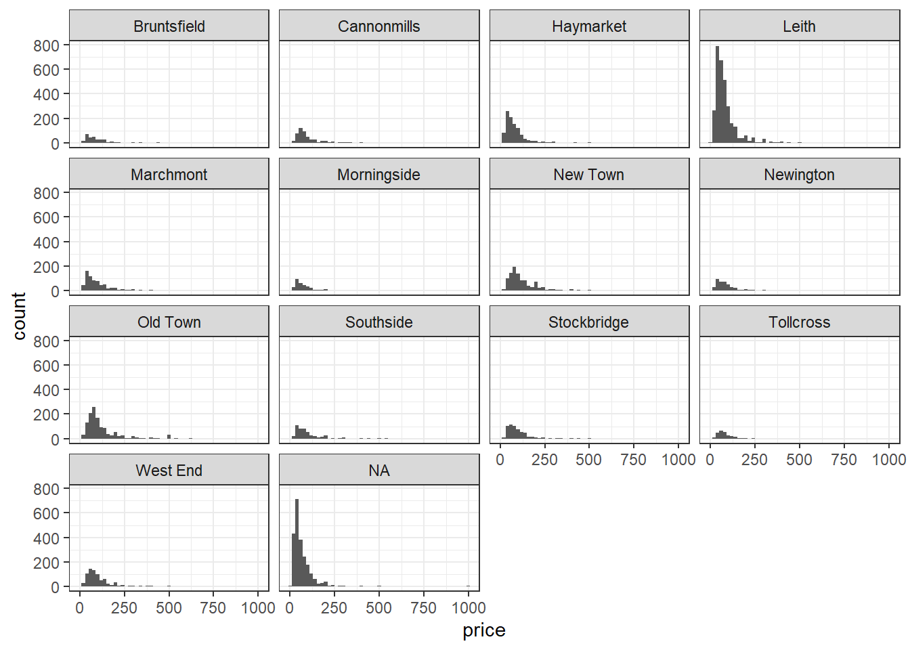

Chapter 16 Let’s make some meaningful (but pretty!) pictures!
Please make sure you have read and understood R4DS Chapter on data visulization. Also check out the Data Visualization> with ggplot2 Cheat Sheet from RStudio. and
Think DEEPLY: Why is being able to generate good data vislization in R important even with awesome tools like PowerBI and Tableau around? ## Packages
We’ll use the tidyverse package for this analysis, and the data is in the dsbox package. Run the following code in the Console to load these packages.
library(tidyverse)
# install.packages("devtools")
library(devtools)
#devtools::install_github("rstudio-education/dsbox")
library(dsbox)16.1 Excercises
- Create these figures using the data sets
mpgordiamondsas needed:



16.2 Airbnb listings in Edinburgh
This data comes from the dsbox package. Recent development in Edinburgh regarding the growth of Airbnb and its impact on the housing market means a better understanding of the Airbnb listings is needed. Using data provided by Airbnb, we can explore how Airbnb availability and prices vary by neighborhood.
The data come from the Kaggle database. It’s been modified to better serve the goals of this exploration.
16.2.1 Learning goals
The goal of this assignment is not to conduct a thorough analysis of Airbnb listings in Edinburgh (yet?), but instead to give you a chance to practice your workflow, data visualization, and interpretation skills.
16.2.2 Data
- The dataset you’ll be using is called
edibnbthe data is in the dsbox package. RunView(edibnb)in your Console to view the data in the data viewer. What does each row in the dataset represent?
**Hint:** The Markdown, ggplot2, and dplyr Quick Reference sheets has an example of inline R code that might be helpful. You can access it from the Help menu in RStudio.- How many observations (rows) does the dataset have? What interesting data is present? What was the purpose of this data being collected in the first place? Visit the kaggle site if needed.
Each column represents a variable. We can get a list of the variables in the data frame using the names() function. How else can we find out details of about these variables?
names(edibnb)## [1] "id" "price" "neighbourhood" "accommodates"
## [5] "bathrooms" "bedrooms" "beds"
## [ reached getOption("max.print") -- omitted 3 entries ]You can find descriptions of each of the variables in the help file for the dataset, which you can access by running ?edibnb in your Console.
Create a faceted histogram where each facet represents a neighborhood and displays the distribution of Airbnb prices in that neighborhood. You4 histogram may be similar (or better! than the example below.)
Create a faceted histogram where each facet represents a neighborhood and displays the distribution of Airbnb prices in that neighborhood. You histogram may be similar (or better! than the example below.)
**Note:** The plot will give a warning about some observations with non-finite values for price being removed. Don't worry about the warning, it simply means that 199 listings in the data didn't have prices available, so they can't be plotted.ggplot(data = ___, mapping = aes(x = ___)) +
geom_histogram(binwidth = ___) +
facet_wrap(~___)
Let's deconstruct this code:
- `ggplot()` is the function we are using to build our plot, in layers.
- In the first layer we always define the data frame as the first argument. Then, we define the mappings between the variables in the dataset and the **aes**thetics of the plot (e.g. x and y coordinates, colors, etc.).
- In the next layer we represent the data with **geom**etric shapes, in this case with a histogram. You should decide what makes a reasonable bin width for the histogram by trying out a few options.
- In the final layer we facet the data by neighbourhood.## Warning: Removed 199 rows containing non-finite values (stat_bin).
6. Create a similar visualization, this time showing the distribution of review scores (review_scores_rating) across neighborhoods. In your answer, include a brief interpretation of how Airbnb guests rate properties in general and how the neighborhoods compare to each other in terms of their ratings.
7. Create another informative visualization of your choosing. Be prepared to share it with the class – although the visualization should need no explaining!
## Instructional staff employment trends
The next dataset is about instructional staff employee hiring trends between 1975 and 2011.
The dataset is called instructors found in dsbox. You can find descriptions of each of the variables in the help file for the dataset, which you can access by running ?instructors in your Console.
The American Association of University Professors (AAUP) is a nonprofit membership association of faculty and other academic professionals. This report compiled by the AAUP shows trends in instructional staff employees between 1975 and 2011, and contains an image very similar to the one given below.
8. Recreate a graph similar to the one above.
9. Discuss how you would improve upon this visualization if the main objective was to communicate that the proportion of part-time faculty have gone up over time compared to
other instructional staff types.Implement the improvements and provide your improved visualization as part of your answer. Also write a few sentences about why you chose to make these improvements and how they address the main goal stated above.
library("tidyverse")
library("lubridate")
library("nycflights13")